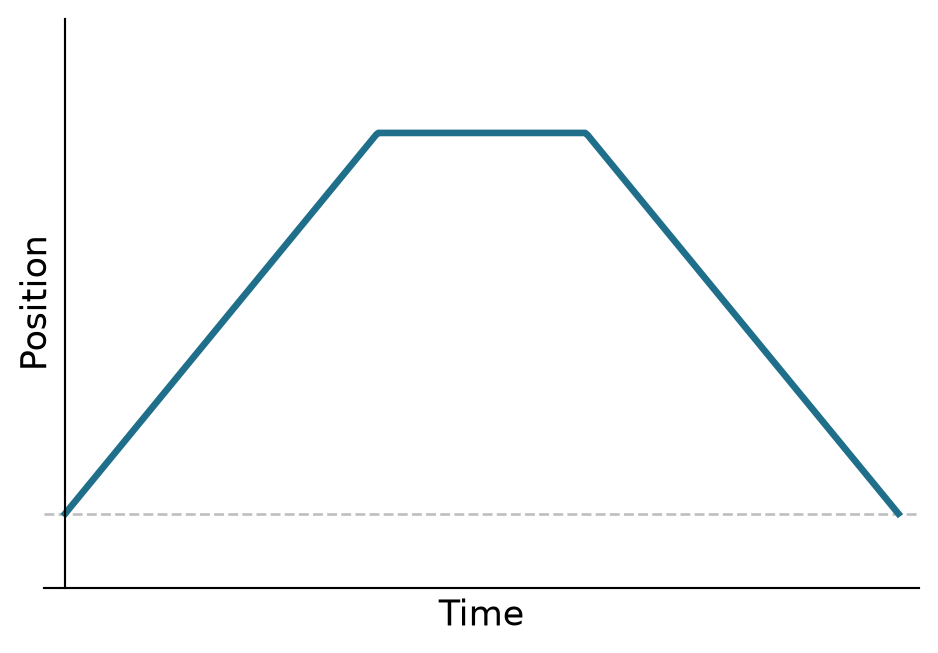
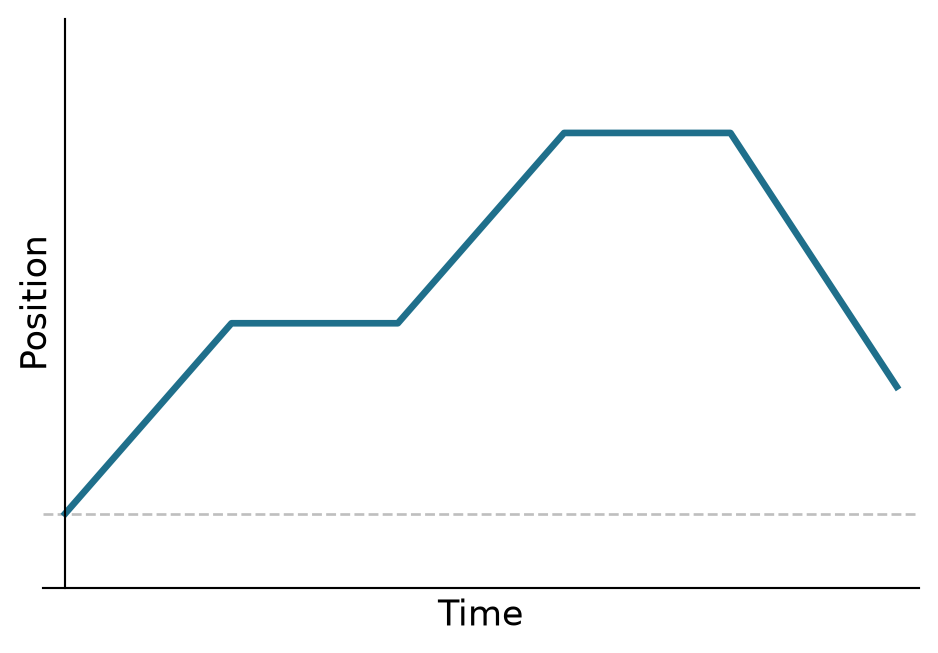
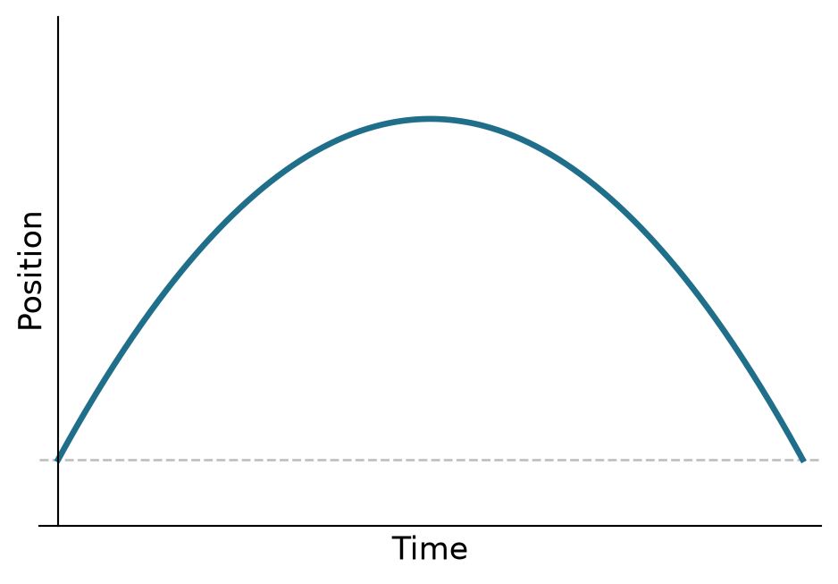
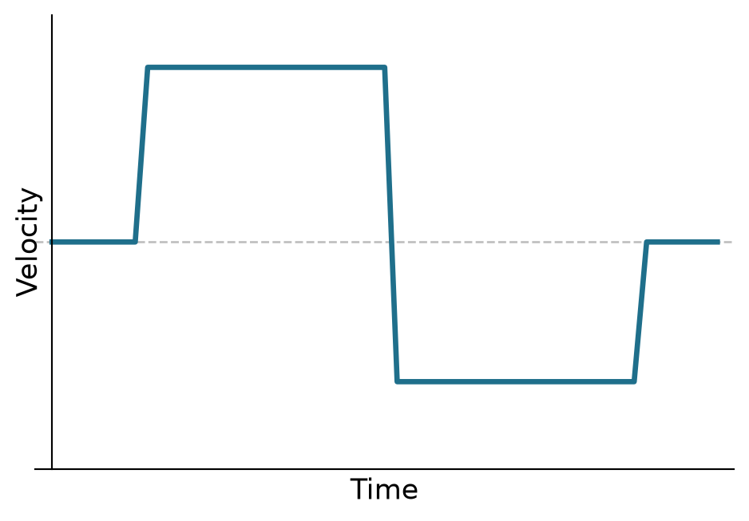
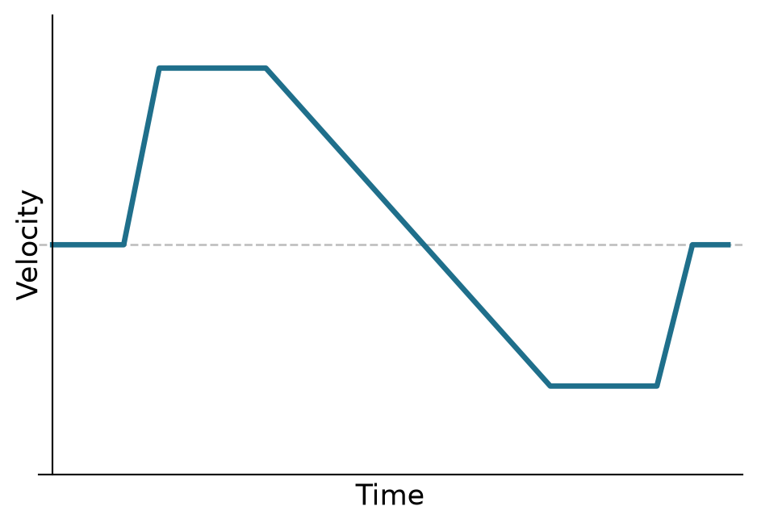

Visualizing Motion
Objectives
- Use a motion detector and LoggerPro software to collect data.
- Create and interpret plots of motion.
- Make precise graphs.
Motion lies at the foundation of classical mechanics. In class, we will develop a mathematical description of motion. We will explore this in lab, too. However, today our goal is to develop an intuition for kinematics. We will use a motion detector and computer plotting software to graph the position, velocity, and acceleration of moving objects as a function of time. By the end of the lab, you should be able to describe the motion that corresponds to a particular graph and make plots to represent the motion of an object.
There are three stages to today’s investigation:
- Learn to use the motion detector and software.
- Match the motion of a cart to a given motion graph.
- Predict the graph that will be created by a motion you plan.
Describe your apparatus and procedure, and record your data, analysis, and observations in your lab notes. Keep detailed notes. Data for this lab will include several plots as well as qualitative observations. In your memo, summarize your findings and describe any conclusions you draw from them.
Key Ideas
There are four important quantities in kinematics: time, position, velocity, and acceleration. We will denote these by \(t\), \(s(t)\), \(v(t)\), and \(a(t)\) respectively. Position, velocity, and acceleration are related as follows: \[v(t) = \diff{s}{t} \qquad \qquad a(t) = \diff{v}{t}\] We will not need to take derivatives today. However, this relation allows us to interpret motion graphs as follows:
- Velocity is the slope of position; acceleration is the slope of velocity.
- If a function is increasing, then its slope is positive (and vice versa).
- If a function is decreasing, then its slope is negative (and vice versa).
- If a function is constant, then its slope is zero (and vice versa).
Use these ideas today as you try to interpret your motion graphs.
Learn to Use the Motion Detector
You will need a laptop computer with Logger Pro or Logger Lite software installed, a Vernier LabQuest Mini interface, and a motion detector. Spend some time getting to know the equipment and software. Be sure to sketch a block diagram of your setup in your notes, too.
Work with your partner or on your own to figure out how to do the following:
- Record your motion.
- Zero the detector.
- Create separate plots of position and velocity.
- Increase or decrease the sampling rate of the detector.
You should also have some idea of the potential, limitations, and accuracy of the motion detector:
- Over what range of distances does the detector work?
- What size of objects will the motion detector register? (Note that it has two settings.)
Once you are familiar with the detector and the software, move on to the next phase.
Match Motion to a Graph
In the second phase of this investigation, you will predict the motion that corresponds to a given graph, then test your hypotheses.
Below are five target graphs — three of position, two of velocity, one of the position graphs an inverted parabola. Notice what’s missing: no units, no tick marks, no numbers. Your goal is to reproduce the shape of each graph, not land on a specific sequence of positions or velocities. That’s deliberate, and worth sitting with: we’re starting to talk about reference frames and vectors in class, and position and velocity are only ever defined relative to some choice of origin, direction, and scale — none of which the graph itself pins down for you.
Match all five:
Position 1
Position 2

Position 3

Velocity 1

Velocity 2

For each graph, first look at the plot and discuss how you should move so that your motion matches it. Record your prediction. Then make your best effort to reproduce the graph with your own motion, recording with the motion detector as you go. Strive for accuracy — but not perfection. Once you’re done, put your recorded graph next to the target and compare them directly (LoggerPro doesn’t have the target built in the way the Vernier files did, so this is a side-by-side comparison rather than a live overlay). Sketch your result, export the graph, or take a screenshot for your notes.
For each graph that you attempt to match, first look at the plot and discuss how you should move so that the plot of your motion matches the graph. Record your prediction. Then, make your best effort reproduce the graph with your own motion. Strive for accuracy — but not perfection — in your graph matching. Sketch your best result, export the graph, or take a screenshot. Once you have successfully reproduced a graph, compare your predictions with your results. Discuss any surprises or challenges in your notes or in your memo.
Predict a Motion Graph
In the final phase of this investigation, your goal is to predict the graphs that will be produced by some controlled motion, then test your hypotheses.
Before you take any data, decide what kind of motion you want to analyze. Each person should devise a unique type of motion they will analyze. Use your observations from the previous exercises to predict what the motion graphs \(x(t)\) and \(v(t)\) will look like, and then sketch your predictions for the motion graphs in your notes.
When you are ready to take data, discuss your experiment and predictions with Dr. Kinder.
Record your data using the motion detector and make a sketch of the actual motion graph next to your prediction. Compare your predictions with your findings. Discuss any surprises or challenges in your notes or in your memo.
Further Exploration
The following activities are not required. If you have the time and the inclination, you may carry out these investigations for extra credit. You are also free to use any of the materials available in the lab to carry out your own investigations. You need to keep a record of your work (setup, procedure, data, analysis) to get credit for your efforts.
Further Analysis: You can do a very thorough analysis of the motion graphs you have created, and you can analyze more exotic motion than we have explored so far. If you have the time and inclination, you can try the following:
- Analyze the acceleration of your motion.
- Analyze the motion of an object: a bouncing ball, a swinging mass, a mass on a spring, etc.
- Analyze a collision at your table or using an air track in the back of the room.
Video Analysis: Download the Tracker video analysis software. Load one of the videos that come with the program, create your own using your smartphone, or download a video from the Web. Use Tracker to analyze the motion of an object in the video. Be sure to include a screenshot of your video and graphs, or export the graphs and include them with your memo and notes.
You don’t have to limit yourself to these suggestions. Feel free to play with the detector and software, or make extremely detailed observations. Record your procedure, data, and observations in your lab notes if you would like extra points for your efforts.